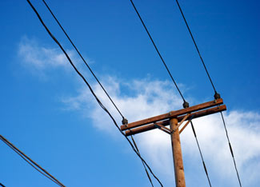

The U.S. Department of Energy (DOE) released an analysis this week concluding that increasing the nation’s reliance on renewable energy to 25 percent by 2025 is affordable and achievable, despite its pessimistic assumptions for many renewable energy technologies. The study also projects that, through 2030, any impact on ratepayers’ cumulative electric and natural gas bills would range from a marginal cost of $8.4 billion (0.2 percent) to a slight savings of $2.5 billion (0.1 percent).
“For more than a decade, the federal government’s own number crunchers have repeatedly found that increasing our nation’s renewable energy usage is entirely feasible and would have little to no effect on consumers. And in many scenarios, consumers would actually save a bit,” says Jeff Deyette, an analyst in the Clean Energy Program at the Union of Concerned Scientists (UCS). “Policies that spur more wind turbine construction, establish new markets for agricultural and forestry wastes, and create new manufacturing jobs can keep more money in our wallets, too.”
The study, conducted by DOE’s Energy Information Administration (EIA), analyzed the proposal for the 25-percent renewable electricity standard that was included in the draft American Clean Energy and Security Act, a comprehensive energy and climate bill that would reduce the heat-trapping emissions that cause global warming. Next month, the House Energy and Commerce Committee will consider a version of the bill, which is likely to include a number of energy efficiency and renewable energy measures in addition to a renewable electricity standard.
UCS contends that EIA made overly pessimistic assumptions about the cost and performance of most renewable energy technologies. In particular, the government analysis shows that bioenergy sources would account for nearly all of the additional renewable energy developed under the national standard. In contrast with earlier studies, the EIA analysis shows wind power providing very little additional power, although the wind industry last year broke previous growth records and the DOE itself released a report in 2008 that concluded wind power could affordably provide 20 percent of the nation's electricity by 2030. Despite these incongruities, the new EIA analysis still found that the renewable energy requirement would have a minimal economic impact on energy consumers. Slightly higher electricity prices projections in some years would be largely offset by reduced demand for - and price of - natural gas and coal.
UCS’s analysis of a 25-percent standard - using a modified, peer-reviewed version of the model EIA used for its study - found that ratepayers would save $64.3 billion on their electric and natural gas bills by 2025, among other benefits. Electricity prices would be as much as 7.6 percent lower than business as usual between 2010 and 2030, according to the analysis. Additionally, the standard would create 297,000 new domestic jobs, generate $13.5 billion in new income for farmers and rural landowners, and cut global warming pollution by 277 million metric tons a year by 2025, the equivalent of the annual output of 70 average-size new coal-fired power plants.
Despite EIA’s pessimistic predictions for wind power, Deyette points out that the EIA study still shows that carbon dioxide emissions from the electricity sector decrease 7 to 12 percent in 2030 compared with business as usual. “The RES [renewable energy standard] would cost-effectively combat global warming emissions and should be a pillar of any comprehensive climate policy Congress considers,” Deyette says.
When viewed in the context of the EIA analysis, the draft Waxman-Markey renewable electricity standard is a relatively modest proposal, Deyette says. After accounting for utility exemptions and opt-out provisions, the amount of renewable energy generation required under a 25-percent standard actually could be as low as 17 percent of U.S. electricity sales. Given the EIA expects current state renewable energy policies and the economic stimulus package’s energy incentives to increase renewable energy development to 11 percent by 2025, UCS experts say it is an achievable goal.
“Opponents of clean energy say the Waxman-Markey proposal aims too high,” says Marchant Wentworth, Washington representative in the UCS Clean Energy Program. “The truth is that its goal is entirely within reach. Weakening the current proposal would mean less money in people’s pockets, fewer jobs, and a continued dependence on dirty fuels.”
UCS expects some members of Congress to try to weaken the Waxman-Markey proposed renewable electricity standard over the next few weeks. The Senate Energy and Natural Resources Committee, for example, is scheduled to mark up a 20-percent-by-2021 standard introduced by Committee Chairman Jeff Bingaman (D-N.M.). But even the 20-percent standard will be attacked, Wentworth said. UCS has obtained an alternative version of the Bingaman proposal circulating on Capitol Hill that would effectively gut the standard.
“The Bingaman renewable standard would help ensure that current state renewable energy requirements are met, but would not necessarily require any more renewable energy to be developed beyond business as usual,” Wentworth says. “If committee members watered that down, the bill would be meaningless.”
|
 TSMALL/FLICKR Under a 25-percent renewable energy standard, electricity prices would be as much as 7.6 percent lower between 2010 and 2030, according to a new analysis. The standard would also create 297,000 new domestic jobs and generate $13.5 billion in new income for farmers and rural landowners. |
|
|